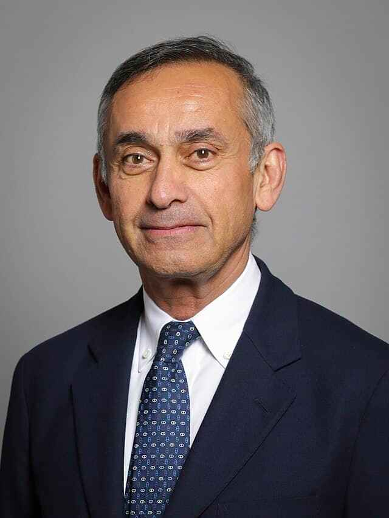

About Us
Taking Good Care Of Family Health And Wellness.
We provide personalised care and attention to each member of your family based on their individual requirements thanks to our family-centered approach to healthcare. We think that developing trusting connections with our patients is important.
Medicity: A Global Leader in Healthcare As a leading healthcare provider, Medicity has expanded its reach beyond local boundaries. With a growing network of hospitals worldwide, we offer consistent quality care, advanced medical technology, and access to specialized treatments. Our commitment to excellence and patient-centered care is evident in every facility, ensuring that you receive the best possible healthcare experience, wherever you are.
Colombo

Medicity Colombo is a shining example of healthcare quality, tucked away in the heart of Colombo. Modern medical equipment and a team of highly qualified specialists staff our state-of-the-art hospital. We provide an extensive array of services, such as:
New Delhi

Medicity New Delhi is a top healthcare destination, situated right in the middle of India's capital. Modern medical technology is installed in our state-of-the-art hospital, which is manned by a team of highly skilled specialists. Among the many services we provide are:
- Gastroenterology: Experts in identifying and managing digestive tract conditions.
- Nephrology: Offering dialysis and kidney transplant services.
- Plastic Surgery: Reconstructive and cosmetic operations.
- Ophthalmology: Complete eye care, including glaucoma treatment and LASIK.
- Obstetrics and Gynaecology: Comprehensive women's health services.
Singapore

Medicity Singapore is a well-known medical facility situated in the energetic city-state of Singapore. Modern medical equipment and a team of highly qualified specialists staff our state-of-the-art hospital. We provide an extensive array of services, such as:
- Neurology: Diagnosis and treatment of nervous system illnesses, including Parkinson's disease and stroke.
- Cardiology: Advanced treatment for heart diseases, including heart valve replacement and coronary artery bypass surgery.
- Orthopaedics: State-of-the-art surgical treatment for muscles, joints, and bones.
- Oncology: Comprehensive cancer care including immunotherapy, radiation, and chemotherapy.
Our goal at Medicity Singapore is to deliver patient-centered, compassionate care. In the heart of Southeast Asia, we want to help you achieve your ideal state of health and wellbeing.
| Branch | Location | Best Doctor and Their Fields | Image of the Doctor |
|---|---|---|---|
| MediCity Colombo | Colombo, Sri Lanka | Dr. H.D. Fernando, Cardiology |  |
| MediCity New Delhi | New Delhi, India | Dr. S.J. Subramuniyam, Pediatric Clinic |  |
| MediCity Singapore | Singapore | Dr. Nicholas Vandott, Neurology Clinic |  |
| MediCity Colombo | Colombo, Sri Lanka | Dr. Deepal Attanayake, Pathology Clinic |  |
| MediCity Singapore | Singapore | Dr. Drake Ramory, Laboratory Analysis |